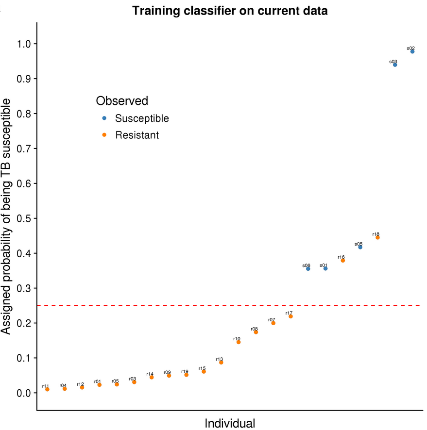
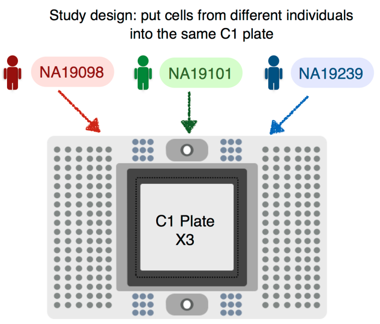
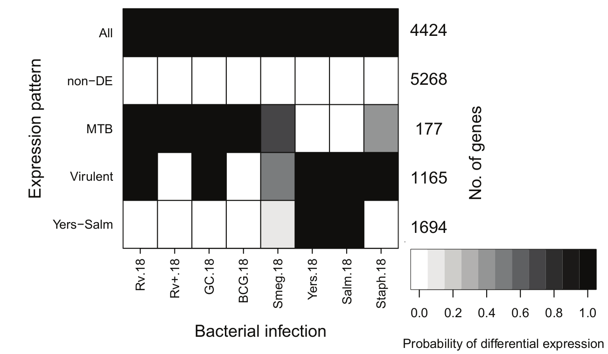

Selected publications
(* denotes equal authorship)
Predicting susceptibility to tuberculosis based on gene expression profiling in dendritic cells
2017
Blischak JD*, Tailleux L*, Myrthil M, Charlois C, Bergot E, Dinh A, Morizot G, Chény O, Platen CV, Herrmann JL, Brosch R, Barreiro LB, and Gilad Y

Batch effects and the effective design of single-cell gene expression studies
2017
Tung PY*, Blischak JD*, Hsiao CJ*, Knowles DA, Burnett JE, Pritchard JK, and Gilad Y

A quick introduction to version control with Git and GitHub
2016
Blischak JD, Davenport ER, and Wilson G
Mycobacterial infection induces a specific human innate immune response
2015
Blischak JD, Tailleux L, Mitrano A, Barreiro LB, and Gilad Y
